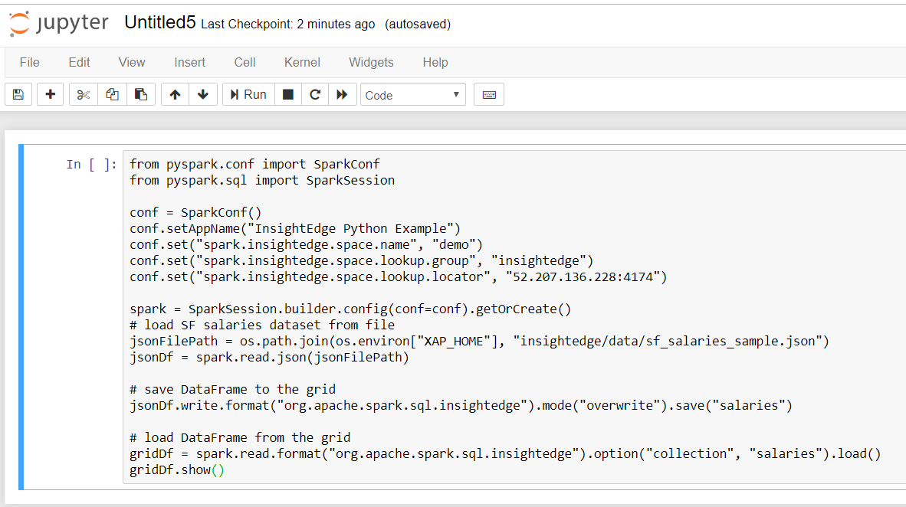

In addition to native support for Apache Zeppelin, which is used primarily by Java and Scala developers, InsightEdge supports integration with the open-source Jupyter web notebook. Programmers can perform data cleaning and transformation, numerical simulation, statistical modeling, data visualization, machine learning, and more on objects in the InsightEdge data grid using PySpark.
This section describes how to integrate the Jupyter Notebook with
Your host machine must have Python release 2 or 3 installed (including pip).
<python home> in your system PATH variable.You need to incorporate the Jupyter web notebook in the
To install Juypter in
Type the following command to install Jupyter:
<python home>/Scripts/pip install jupyter
Include <pythod-home>/Scripts in your system PATH variable.
Add the following entries to <XAP_HOME>/insightedge/bin/insightedge-pyspark:
export PYSPARK_DRIVER_PYTHON=jupyter
export PYSPARK_DRIVER_PYTHON_OPTS='notebook'Type the following command to install Jupyter:
<python home>\Scripts\pip install jupyter
<pythod-home>\Scripts in your system PATH variable.Add the following entries to <XAP_HOME>\insightedge\bin\insightedge-pyspark:
set PYSPARK_DRIVER_PYTHON=jupyter
set PYSPARK_DRIVER_PYTHON_OPTS='notebook'
After you've installed Jupyter and incorporated it within
To run PySpark from the Jupyter dashboard:
Run the following command:
<XAP_HOME>\insightedge\bin\insightedge-pyspark
The Jupyter dashboard launches in a browser window that opens at localhost:8888.
Load data from the InsightEdge data grid as shown in the PySpark command line shell, and use the DataFrames API to manipulate the data as necessary.
You can run this sample that loads data from a file and saves it to the demo dataspace.
The following shows the PySpark commands within the Jupyter dashboard:
